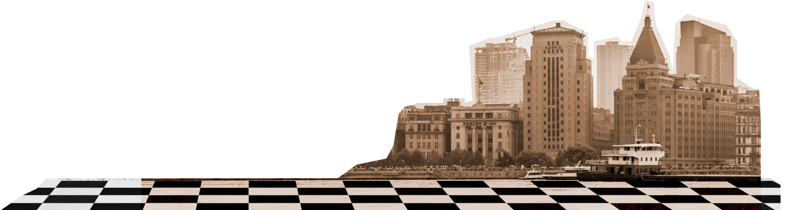
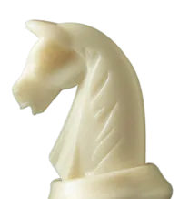
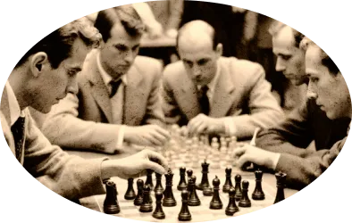
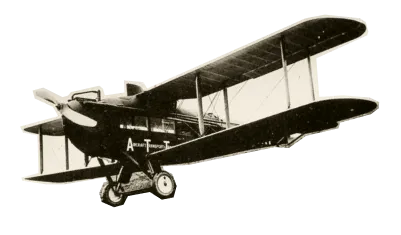

Превратите уездный город в столицу земного шара
Оплатите взнос на телеграммы для организации Международного васюкинского турнира по шахматам


Чтобы поддержать Международный васюкинский турнир посетите лекцию на тему:
«Плодотворная дебютная идея»
Чтобы поддержать Международный васюкинский турнир

посетите лекцию на тему:
«Плодотворная дебютная идея»
И сеанс одновременной игры в шахматы на 160 досках гроссмейстера О. Бендера
| Место проведения: | Клуб «Картонажник» |
| Дата и время мероприятия: | 22 июня 1927 г. в 18:00 |
| Стоимость входных билетов: | 20 коп. |
| Плата за игру: | 50 коп. |
| Взнос на телеграммы: |
Этапы преображения Васюков
Будущие источники
обогащения васюкинцев
Будущие источники обогащения
васюкинцев
Строительство железнодорожной магистрали Москва-Васюки
Открытие фешенебельной гостиницы «Проходная пешка» и других небоскрёбов
Поднятие сельского хозяйства в радиусе
на тысячу километров: производство овощей, фруктов, икры,
шоколадных
конфет
Строительство дворца для турнира
Размещение гаражей для гостевого автотранспорта
Постройка сверхмощной радиостанции для передачи всему миру сенсационных результатов
Создание аэропорта «Большие Васюки»
с регулярным отправлением почтовых самолётов и дирижаблей во все
концы света, включая Лос-Анжелос и Мельбурн
